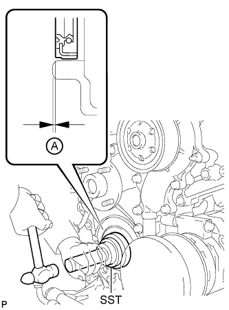

FRONT CRANKSHAFT OIL SEAL > INSTALLATION |
| 1. INSTALL FRONT CRANKSHAFT OIL SEAL |
Apply engine oil to the lip of a new oil seal.
 |
Using SST and a hammer, tap in the oil seal as shown in the illustration.
| 2. INSTALL CRANKSHAFT PULLEY SUB-ASSEMBLY |
 |
Align the crankshaft pulley and the crankshaft knock pin, and temporarily install the crankshaft pulley with the 3 bolts.
Install the 2 bolts to the bolt holes of the crankshaft rear side.
Using a bar, turn the crankshaft until the crankshaft pulley service hole is a little to the right of bottom dead center.
Install a 14 mm x 1.5 pitch service bolt with a length of 70 mm or more to the crankshaft pulley service hole, and hold the crankshaft using the timing chain cover protrusion.
 |
Uniformly tighten the 3 bolts in 2 passes in the order shown in the illustration.
Remove the service bolt.
| 3. INSTALL RADIATOR ASSEMBLY |
Install the radiator (Click here).